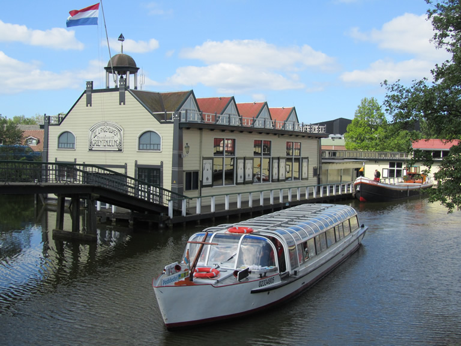
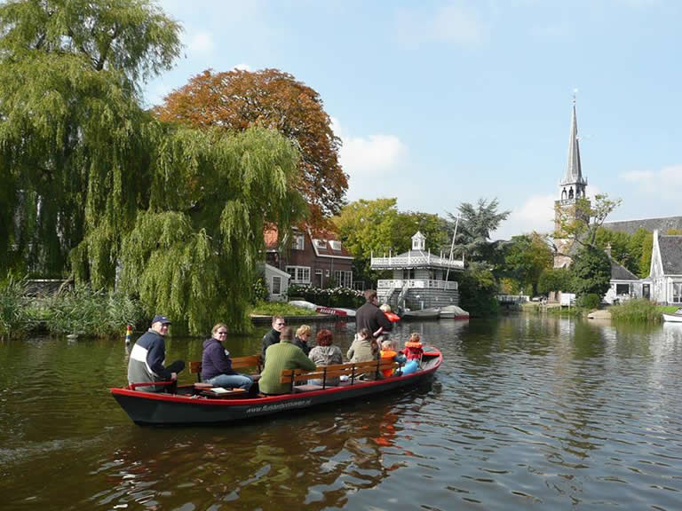

Feitjes over Langedijk
-
Langedijk is bekend om zijn tuinbouw, waar er voornamelijk witte en rode kool en soms mais wordt verbouwd.
-
In Langedijk staan werelds grootste zuurkoolfabrieken, Kramer zuurkool en de door hun overgenomen Hart & Co,
Langedijk wordt ook wel de koolschuur van Europa genoemd. De zuurkool wordt geëxporteerd naar vele landen in de wereld. -
In Langedijk vindt u het Museum BroekerVeiling, de oudste doorvaargroenteveiling ter wereld. Het museum geeft een uniek inzicht in de geschiedenis van de tuinbouw en veilingen in Nederland.
-
Langedijk is omgeven door water, met name de kanaal Omval-Kolhorn, aftakkingen daarvan en het Geestmerambacht. Hierdoor is het gebied populair bij watersporters en biedt het veel mogelijkheden om te varen, kanoën en vissen.
-
Langedijk is gelegen in een prachtig landschap, met karakteristieke lintdorpen zoals Oudkarspel, Noord-Scharwoude, Zuid-Scharwoude en Broek op Langedijk. Het gebied is daarom zeer geschikt voor wandel- en fietstochten.
Museum BroekerVeiling
Museum BroekerVeiling is een levendige plek vol geschiedenis en traditie, waar bezoekers worden meegenomen op een educatieve reis door de agrarische sector van Noord-Holland.
Het museum toont de geschiedenis van de oudste doorvaartveiling ter wereld en geeft een inzicht in hoe deze de lokale economie heeft gevormd.
Het museum biedt een scala aan activiteiten voor bezoekers van alle leeftijden, waaronder een boottocht over de veiling, workshops en interactieve tentoonstellingen.
Bezoekers kunnen ook genieten van een verzameling van historische artefacten die het verhaal van de veiling tot leven brengen.
Museum BroekerVeiling is een onmisbare bestemming voor iedereen die geïnteresseerd is in de agrarische geschiedenis van Nederland en biedt een unieke en memorabele ervaring voor alle bezoekers.
Vaartocht met schuit
Een vaartocht met een schuit door Langedijk is een ontspannen en pittoreske manier om het Nederlandse platteland te verkennen. Langedijk is een gemeente in Noord-Holland die bekend staat om zijn historische waterwegen en karakteristieke huizen met puntdaken die langs de oevers van de kanalen staan.
Tijdens de vaartocht met een schuit kun je genieten van de prachtige omgeving terwijl je langs historische gebouwen, bruggen en molens glijdt. Je kunt ook een bezoek brengen aan de vele eilandjes die verspreid liggen over de kanalen, die vroeger dienden als opslagplaatsen voor groenten en fruit.